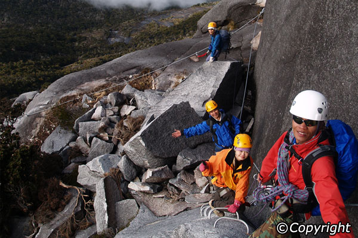

If you’re tight on time, then the best way to experience Sabah’s numerous offerings – from mighty Mount Kinabalu to the Sipadan coral reefs and the Sepilok Orang Utan Rehabilitation Centre – is to participate in a tour.
The Mount Kinabalu Summit Climb allows you to ascend Malaysia’s highest peak, Mount Kinabalu – the trip can be pretty gruelling yet Sabah’s star attraction is well worth the effort. If you’re looking for gravity-defying challenges then the mountain climbing itinerary below is sure to sate your adrenaline craving. Experienced guides will steer you across the Crocker Range – you’ll also be able to nature trek through Kinabalu Park and soak in the sulphurous waters of the Poring Hot Springs.
This heart-pounding, two-day adventure is a trip you won’t soon forget. Start out your journey through the Upper Montane Forest then stop for lunch along the trail and make your way to Lahad Datu before the day’s end. Everyone’s quest for the summit is different, so guides will urge you along at your own comfortable pace.
Spend the night 3,345 metres high in Lahad Datu and, in order to catch the first rays of the sun at early dawn at the apex of the mountain, the journey continues the next day in the wee hours of the morning. Later, enjoy a late breakfast at Laban Rata before descending to the park’s headquarters – you’ll be awarded a certificate for your successful climb and after a relaxing lunch, the tour group will head on down towards Kota Kinabalu.
| 01/04/14 - 31/03/15 MOUNTAIN KINABALU SUMMIT CLIMB Rates per person in Malaysia Ringgit |
|
|---|---|
| Adult Price | Child Price |
| RM 175 | RM 105 |
|
Restriction:
|
|
| Additional Information |
|---|
|